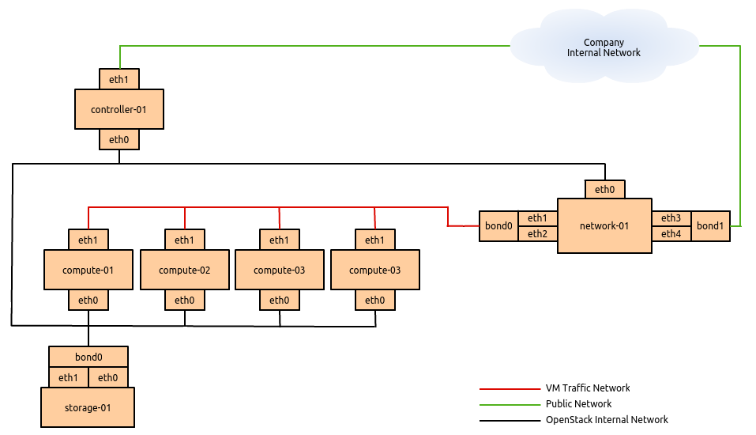

Aviso
- A continuación se presenta un ejemplo muy simplificado de implantación
de OpenStack
- Una implantación real conlleva un estudio mucho más exhaustivo del
problema a solucionar y de todos los elementos implicados, tanto de hardware
como de software
- Vamos a obviar todos los aspectos relativos a los dispositivos de
red
Caso tipo
- Nube privada
- Varios proyectos y usuarios independientes
- Capacidad inicial máxima estimada:
- 200 máquinas con 4 GiB RAM, 2 vCPU y 20 GiB HD
- Consumo CPU intermedio
- Hasta 10 TiB de almacenamiento adicional (discos)
- Hasta 10 TiB de almacenamiento de objetos
- Virtualización de redes
- ¿Alta disponibilidad?
- Sistema escalable
Componentes de OpenStack necesarios
- Keystone
- Glance
- Nova
- Cinder
- Horizon
- Neutron
Componentes de OpenStack opcionales
- Swift: No es imprescindible si utilizamos Ceph, que también puede
proporcionar almacanamiento de objetos
- Ceilometer y Heat
- Trove
- Sahara
- Designate
- ...
- En general no repercuten en la arquitectura, salvo swift
Otros componentes necesarios
- Servidor AMQP: RabbitMQ o QPID
- BBDD:
- Si HA: Galera o MySQL cluster
- Si no HA: MySQL
Tecnologías subyacentes
- Hipervisor: KVM
- Almacenamiento. Opción 1:
- Almacenamiento de bloques: LVM + iSCSI
- Almacenamiento de objetos: Swift
- Almacenamiento. Opción 2:
- Almacenamiento de bloques: Ceph RBD
- Almacenamiento de objetos: Ceph RadosGW
- Switch virtual: Open vSwitch
Tipos de nodos
Los roles típicos dentro de OpenStack son:
- Nodo controlador: Equipo que gestiona el
cloud, ofrece las APIs a los clientes, contiene las bases
de datos, el servidor AMQP, los planificadores y los componentes
"centrales" de cada componente de OpenStack.
- Nodo de red: Con neutron es recomendable
utilizar un equipo específico para todo el tráfico de red
- Nodo de computación Equipo en el que se
ejecutan las instancias
- Nodo de almacenamiento Múltiples
opciones. Almacenamiento de volúmenes y/o objetos.
Características físicas de los nodos
- Nodo controlador:Servidor convencional sin grandes
requisitos. Podría reutilizarse un equipo que ya se tuviera.
- Nodo de red:Servidor de características
similares al nodo controlador. Mínimo con 2 interfaces de
red Gigabit Ethernet.
- Nodo de almacenamiento: Dependiendo de la
opción de almacenamiento así serán los discos adicionales
- Nodo de computación:Equipo de altas
prestaciones con procesadores potentes y bastante RAM. Los discos a
utilizar depende de si las instancias utilizan o no disco
local.
Sin alta disponibilidad

Sobre la Alta disponibilidad
- Un despliegue de OpenStack sin SPOF es bastante complejo
- Se puede conseguir algunos servicios en HA de forma sencilla:
- MySQL con Galera
- AMQP
- APIs balanceadas con HA-proxy
- Swift o Ceph
- Los nodos de computación no se montan en HA
OpenStack High Availability Guide
Componentes de OpenStack. Detalle
Keystone (Identity Service)
- Proyectos, usuarios, roles, etc.
- Implementa RBAC (Role Based Access Control)
- Autenticación por tokens
- Gestión de los Endpoints
- Backend: SQL o LDAP
- ¿PKI?
- ¿http o https?
Glance (Image Service)
- Gestión de imágenes e instantáneas
- Formato qcow2 ← KVM
- Se pueden almacenar como objetos las imágenes e instantáneas
Nova (Compute Service)
- Gestión de las instancias
- Varios subcomponentes: nova-api, nova-conductor, nova-console,
nova-scheduler, nova-compute
- La configuración de nova-compute depende del hipervisor
- nova-scheduler implementa varios algoritmos
- Importante: Definir CPU y RAM allocation-ratio
- nova-console: VNC o SPICE
Cinder (Block Storage Service)
- Gestión de los volúmenes
- Múltiples "backends"
- Varios componentes: cinder-api, cinder-scheduler y cinder-volume
Horizon (Dashboard)
- Desarrollada en Django
- Fácilmente extensible y adaptable
- Habitualmente con memcached
Neutron (Networking Service)
- Encargado de las redes, subredes, routers, etc.
- Modular Layer 2 (ML2):
- Varios tipos: local,flat,vlan,gre,vxlan
- Varios mecanismos: Arista, Brocade, Cisco, Nexus, Hyper-V, midonet,
nuage, OVS, ...
- DHCP y routers definidos en el nodo de red
- Servicio de metadatos a cada subred en modo proxy
- Puede proporcionar LBaaS, VPNaaS y FWaaS
Nodos de red y controlador
- El o los nodos controlador y nodos de red son equipos convencionales sin
requisitos especiales en capacidad de cómputo, memoria o almacenamiento en
disco para una nube pequeña como la de este ejemplo.
- La principal mejora que se podría hacer en estos equipos es la inclusión
de interfaces de red 10 Gigabit Ethernet
Nodo de computación
uso poco intensivo
- CPU allocation ratio: 16
- RAM allocation ratio: 1.5
- Escalamos al pico máximo:
- 533 GiB RAM (800 / 1.5)
- 25 cores (200 X 2 / 16)
- 4 TiB HD (200 x 20)
- Resultado: 4 nodos de computación
- 128 GiB de RAM
- 6 cores
- 1 TiB de HD
Nodo de computación
uso intermedio
- CPU allocation ratio: 8
- RAM allocation ratio: 1.2
- Escalamos al pico máximo:
- 666 GiB RAM (800 / 1.2)
- 50 cores (200 X 2 / 8)
- 4 TiB HD (200 x 20)
- Resultado: 5 nodos de computación
- 128 GiB de RAM
- 10 cores
- 1 TiB de HD
Nodo de computación
uso intensivo
- CPU allocation ratio: 1
- RAM allocation ratio: 1
- Escalamos al pico máximo:
- 800 GiB RAM
- 400 cores
- 4 TiB HD
- Resultado: 12 nodos de computación
- 64 GiB de RAM
- 32 cores
- 500 GiB de HD
Nodo de almacenamiento
LVM + iSCSI
- Supongamos que proporcionamos redundancia con RAID5 más un disco de reserva
- 7 HD de 2 TiB
- Discos aparte para el sistema y cinder-volume
- Varias interfaces de red para bonding o 10 Gigabit Ethernet
OpenStack User Survey
- Referencia para saber qué hacen otros
- Mayo 2015